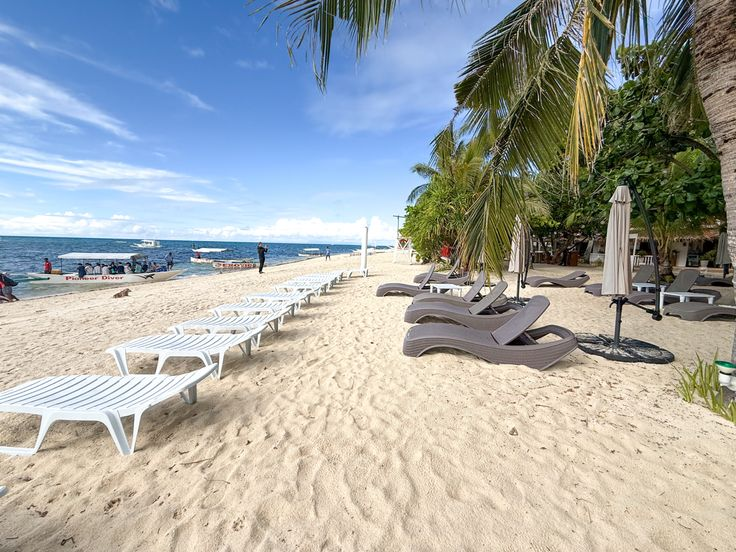
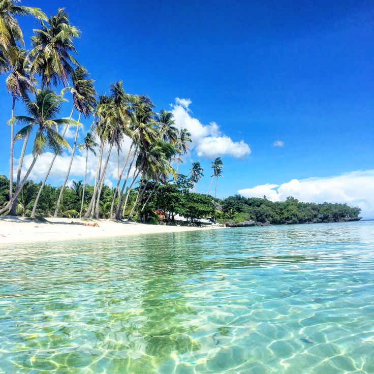
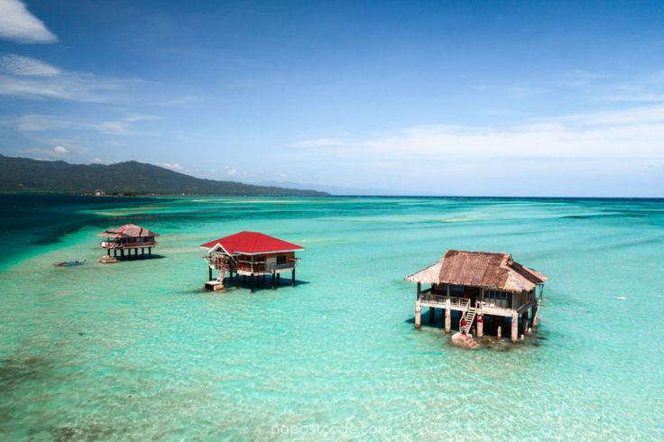
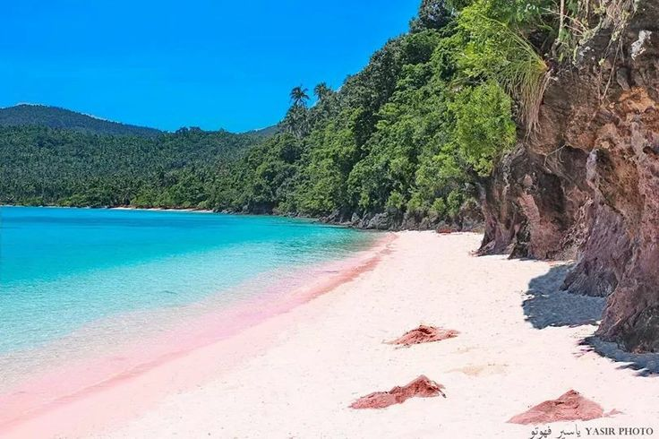
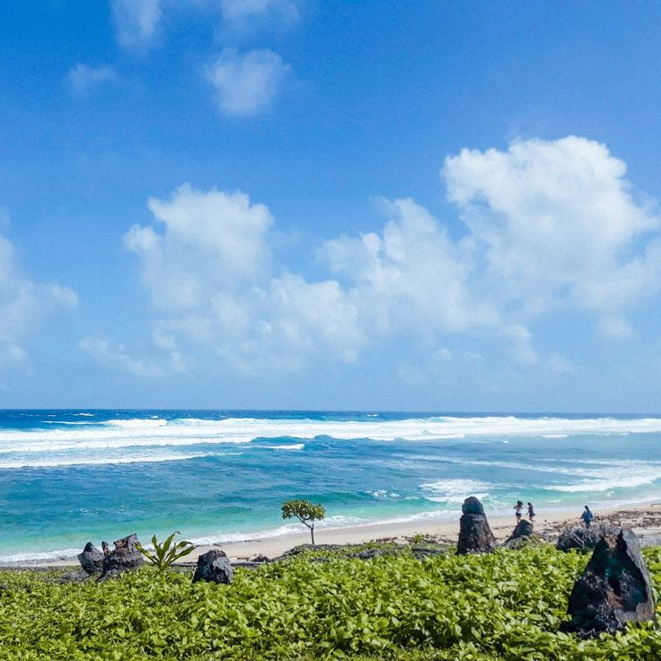

Find Your Next Escape
From famous white-sand beaches to quiet island getaways, discover beautiful destinations across Western, Central, and Eastern Visayas.
Explore Our Destinations
Every island has something different to offer. Browse our collection of beaches and islands, then select a destination to learn more.

White Beach, Boracay
Walk along powdery white sand, enjoy clear blue waters, and watch the sunset over one of the Philippines' best-known beach destinations.
Discover Destination →
Bounty Beach
Experience the laid-back atmosphere of Malapascua Island, with sandy shores and opportunities for island adventures.
Discover Destination →
Alona Beach
Visit Panglao's popular beach for clear waters, coastal dining, and access to nearby marine attractions.
Discover Destination →
Paliton Beach
Find a peaceful coastal escape on Siquijor, known for its tropical scenery and beautiful beach sunsets.
Discover Destination →
Manjuyod Sandbar
Discover a stretch of white sand that emerges at low tide, surrounded by the clear waters of Negros Oriental.
Discover Destination →
Kalanggaman Island
Admire a long white sandbar extending into turquoise waters off the coast of Leyte.
Discover Destination →
Sambawan Island
Take in rugged island scenery, clear waters, and panoramic views of the surrounding sea.
Discover Destination →
Sila Island Pink Beach
See the pinkish tones of the sand and enjoy the quieter coastal scenery of San Vicente, Northern Samar.
Discover Destination →
Calicoan Island
Explore Eastern Samar's rugged coastline and surf spots, including the area around ABCD Beach.
Discover Destination →No destinations are listed for this region yet.
Ready for Your Next Adventure?
Found a destination that caught your eye? Explore our tour packages and start planning your next Visayas getaway.
Explore Tour Packages